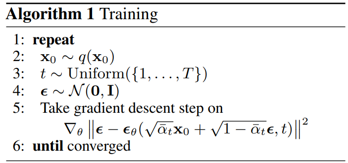
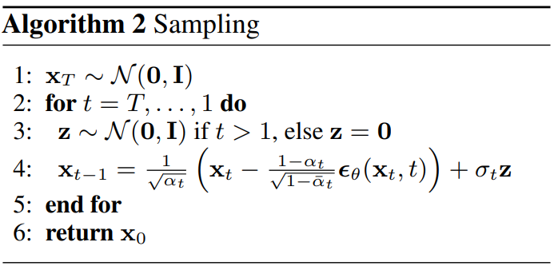

import torch
class Diffusion():
def __init__(self, beta_start, beta_end, timesteps):
self.beta_start = beta_start
self.beta_end = beta_end
self.timesteps = timesteps
self.beta_t = torch.linspace(self.beta_start, self.beta_end, self.timesteps)
self.alpha_t = 1- self.beta_t
self.alphabar_t = torch.cumprod(self.alpha_t, dim=0)
self.eps_theta = torch.nn.Module()
def forward_process(self, x_0, eps, t):
alphabar_t = self.alphabar_t[t].view(-1, 1, 1, 1)
x_t = torch.sqrt(alphabar_t)*x_0 + torch.sqrt(1 - alphabar_t)*eps
return x_t
def reverse_process(self, x_t, t, eps=None):
pred_eps = self.eps_theta(x_t, t)
alphabar_t = self.alphabar_t[t].view(-1, 1, 1, 1)
alpha_t = self.alpha_t[t].view(-1, 1, 1, 1)
beta_t = self.beta_t[t].view(-1, 1, 1, 1)
if eps is None:
x_prevt = (1/torch.sqrt(alpha_t))*(x_t - (beta_t/torch.sqrt(1 - alphabar_t))*pred_eps)
else:
x_prevt = (1/torch.sqrt(alpha_t))*(x_t - (beta_t/torch.sqrt(1 - alphabar_t))*pred_eps) + torch.sqrt(beta_t)*eps
return x_prevt
def sample(self, shape):
x_t = torch.randn(shape)
for t in range(self.timesteps-1, -1, -1):
if t==0:
x_t = self.reverse_process(x_t, t)
else:
eps = torch.randn(shape)
x_t = self.reverse_process(x_t, t, eps)
return x_t
def loss(self, x_0):
t = torch.randint(0, self.timesteps, (x_0.shape[0],))
eps = torch.randn_like(x_0)
x_t = self.forward_process(x_0, eps, t)
pred_eps = self.eps_theta(x_t, t)
return torch.nn.functional.mse_loss(eps, pred_eps)Diffusion Models
Deep Learning
Notes on Diffusion Models
TipReferences
- Minimal PyTorch implementation accompanying these notes:
Denoising Diffusion Probabilistic Models
Denoising Diffusion Probabilistic Models operate within a variational framework, much like VAEs
DDPMs introduce a clever twist that tackles some of the challenges faced by their predecessors
DDPMs involve two most distinct stochastic processes:-
The forward Pass (Fixed Encoder):
- Gradually corrupts data by injecting gaussian noise over multiple steps via a transition kernel q(x_t \mid x_{t-1})
- The data evolves into an isotropic gaussian distribution, effectively becoming pure noise
- Encoder is fixed not learned.
Tip
- iso means same and tropic means direction. This is often represented as identity matrix which signifies that noise is uncorrelated across all dimensions.
- pure noise means no identity of original data, only gaussian noise.
- The reverse denoising process(Learnable Decoder):
- A neural net learns to reverse the noise corruption through a parameterized distribution p_{\theta}(x_{t-1}|x_{t})
- Starting from pure noise, this process iteratively denoises to generate realistic samples
- Each individual denoising step is a more manageable task than generating a complete sample from scratch as VAEs often attempt to do
Forward Process
- Forward process involves taking the noisy image from previous timestep and inject more noise
- Forward transition kernel: q(x_{t} \mid x_{t-1}) = N(x_{t}, \sqrt{1-\beta_{t}}x_{t-1}, \beta_{t}I) where x_{t} is output, \sqrt{1-\beta_{t}}x_{t-1} is mean and \beta_{t}I is variance
- Given \beta_{t} \sim (0, 1), In paper \beta_{start} = 0.0001 and \beta_{end} = 0.02
- q(x_{1}...x_{T} \mid x_{0}):= \prod_{t=1}^{T} q(x_t \mid x_{t-1})
- Noise injection form: x_{t} = \sqrt{1-\beta_{t}}x_{t-1} + \sqrt\beta_{t} \epsilon
- lets say \alpha_{t} = 1-\beta_{t}
- Then x_{t} = \sqrt\alpha_{t}x_{t-1} + \sqrt{1-\alpha_{t}} \epsilon
- Lets say \bar{\alpha}_{t}:= \prod_{t=0}^{T} \alpha_t
| Symbol | Meaning |
|---|---|
| \beta_t | noise schedule |
| \alpha_t | 1-\beta_t |
| \bar{\alpha}_t | \prod_{t=0}^{T} \alpha_t |
| \epsilon | gaussian noise |
- x_{1} = \sqrt{\alpha_{1}}x_{0} + \sqrt{1-\alpha_{1}} \epsilon
- x_{2} = \sqrt{\alpha_{2}}x_{1} + \sqrt{1-\alpha_{2}} \epsilon
- if we substitute value of x_{1} in above equation then
- x_{2} = \sqrt{\alpha_{2}}(\sqrt\alpha_{1}x_{0} + \sqrt{1-\alpha_{1}} \epsilon) + \sqrt{1-\alpha_{2}} \epsilon
- x_{2} = \sqrt{\alpha_{1}\alpha_{2}}x_{0} + \sqrt{\alpha_{2}(1-\alpha_{1})} \epsilon + \sqrt{1-\alpha_{2}} \epsilon
- x_{2} = \sqrt{\alpha_{1}\alpha_{2}}x_{0} + \sqrt{\alpha_{2}-\alpha_{1}\alpha_{2}} \epsilon + \sqrt{1-\alpha_{2}} \epsilon
Tip
- When we merge two normal distributions with different variance, the new distribution is as per below formula
- N(0, \sigma_{1}^2I) + N(0, \sigma_{2}^2I) = N(0, (\sigma_{1}^2 + \sigma_{2}^2)I)
- Using above intuition we can change accordingly the forward equation
- \sqrt{\alpha_{2}-\alpha_{1}\alpha_{2}} \epsilon + \sqrt{1-\alpha_{2}} \epsilon = \sqrt{1-\alpha_{1}\alpha_{2}} \epsilon
- x_{2} = \sqrt{\alpha_{1}\alpha_{2}}x_{0} + \sqrt{1-\alpha_{1}\alpha_{2}} \epsilon
- x_{2} = \sqrt{\bar{\alpha}_{2}}x_{0} + \sqrt{1-\bar{\alpha}_{2}} \epsilon
- If we generalize above equation it becomes
- x_{t} = \sqrt{\bar{\alpha}_{t}}x_{0} + \sqrt{1-\bar{\alpha}_{t}} \epsilon
Reverse Process
Reverse Transition (Parameterization)
- p(x_{t-1}|x_{t}) = N(x_{t-1}; \mu_{\theta}(x_{t}, t), \epsilon_{\theta}(x_{t}, t))
- Two neural networks to parameterize normal distribution \mu_{\theta} and \epsilon_{\theta}
- In paper variance is fixed so we only need to predict mean
- We want to maximize the log likelihood of our data as we do in case of VAEs
- log(p_\theta(x_{0}))
- but it is not easily computable as it depends on all the other x_{ts}:- x_0, x_1, x_2..x_T
- So keeping track of other T-1 random variables is not possible as a solution we can compute ELBO as we did in VAEs
Objective: Log-Likelihood and ELBO
lets say when we have f(x) and g(x) and f(x) > g(x) for all x then if we can maximize g(x) then f(x) will also be maximized
Using the above analogy, lets say f(x) = log(p_\theta(x_{0})) and g(x) = log(p_\theta(x_{0})) - D_{KL}(q(x_1:x_T \mid x_0) || p_{\theta}(x_1:x_T \mid x_0))
From above equations, we can see f(x) and g(x) are almost same, just there is one difference the KL-Divergence term which is being subtracted so if we are subtracting something then it is lesser than f(x) and thus if we can somehow maximize g(x) then we can maximize the likelihood of data samples
log(p_\theta(x_{0})) >= log(p_\theta(x_{0}))) - D_{KL}(q(x_1:x_T \mid x_0) || p_{\theta}(x_1:x_T \mid x_0))
Now we have to maximize log(p_\theta(x_{0}))) - D_{KL}(q(x_1:x_T \mid x_0) || p_{\theta}(x_1:x_T \mid x_0))
Now our loss becomes negative of log likelihood -log(p_\theta(x_{0}))) + D_{KL}(q(x_1:x_T \mid x_0) || p_{\theta}(x_1:x_T \mid x_0)) \tag{1}
Even now our loss still contains p_\theta(x_{0}) and to eliminate that we have to make some changes to KL term
From KL Term to VLB (Step-by-step Expansion)
- Now lets focus on KL-term only
- D_{KL}(q(x_1:x_T \mid x_0) || p_{\theta}(x_1:x_T \mid x_0)) = log\frac{q(x_1:x_T \mid x_0)}{p_{\theta}(x_1:x_T \mid x_0)}
- the denominator in the above expression can be replaced using bayes’ theorem
- p_{\theta}(x_1:x_T \mid x_0) = \frac{p_{\theta}(x_0 \mid x_1:x_T)p_{\theta}(x_1:x_T )}{p_{\theta}(x_0)}
- Numerator can be replaced by p_{\theta}(x_0 , x_1:x_T) using joint probability.
- Now p_{\theta}(x_1:x_T \mid x_0) = \frac{p_{\theta}(x_0 , x_1:x_T)}{p_{\theta}(x_0)}
- where p_{\theta}(x_0 , x_1:x_T) can be written as p_{\theta}(x_0:x_T) full joint distribution of entire diffusion trajectory
- Now putting back the denominator value in KL term as \frac{p_{\theta}(x_0:x_T)}{p_{\theta}(x_0)} gives us
- log\frac{q(x_1:x_T \mid x_0)p_{\theta}(x_0)}{p_{\theta}(x_0:x_T)}
- If we expand above equation as:-
- log\frac{q(x_1:x_T \mid x_0)}{p_{\theta}(x_0:x_T)} + log(p_{\theta}(x_0))
- lets add above derived kl term in Equation 1 which gives
- -log(p_{\theta}(x_{0})) + log\frac{q(x_1:x_T \mid x_0)}{p_{\theta}(x_0:x_T)} + log(p_{\theta}(x_0))
- Notice -log(p_{\theta}(x_{0})) gets cancelled with log(p_{\theta}(x_0))
- Now our loss function becomes: log\frac{q(x_1:x_T \mid x_0)}{p_{\theta}(x_0:x_T)}
- Which gives -log(p_\theta(x_{0})) <= log\frac{q(x_1:x_T \mid x_0)}{p_{\theta}(x_0:x_T)} VLB
VLB Expansion (Product to Summation)
- As we can see in VLB numerator is basically forward pass and denominator can be written as:
- p_{\theta}(x_{0:T}) = p(x_T)\prod_{t=1}^{T} p_{\theta}(x_{t-1} \mid x_t) and p(x_T) is simply normal distribution with mean 0 and std 1
- We can also write numerator as product of probabilities as \prod_{t=1}^{T}q(x_{t} \mid x_{t-1})
- Now our VLB becomes
- log\frac{\prod_{t=1}^{T}q(x_{t} \mid x_{t-1})}{p(x_T)\prod_{t=1}^{T} p_{\theta}(x_{t-1} \mid x_t)}
- Now take out p(x_T) which gives
- -log(p(x_T)) + log\frac{\prod_{t=1}^{T}q(x_{t} \mid x_{t-1})}{\prod_{t=1}^{T} p_{\theta}(x_{t-1} \mid x_t)}
- Now we can transform product to summation which gives
- -log(p(x_T)) + \sum_{t=1}^{T}log\frac{q(x_{t} \mid x_{t-1})}{p_{\theta}(x_{t-1} \mid x_t)}
- Now from summation one take out t=1 formulation and keep everything as it is which gives
- -log(p(x_T)) + \sum_{t=2}^{T}log\frac{q(x_{t} \mid x_{t-1})}{p_{\theta}(x_{t-1} \mid x_t)}+ log\frac{q(x_1 \mid x_0)}{p_{\theta}(x_0 \mid x_1)}
- now the numerator in summation of logs can be written as:
- q(x_t \mid x_{t-1}) = \frac{q(x_{t-1} \mid x_t)q(x_t)}{q(x_{t-1})}
Conditioning Trick: Reduce Variance with x_0
Now all the three terms 2 in numerator and 1 in denominator have really high variance, since we dont know what we started from that’s why author tried to reduce the variance by conditioning on x_0 and thus it reduces the choice of possible candidates. Intuitively given a noisy sample how can you say that what part do i have to remove, whereas if we also have x_0 then we might guess what part of noise to remove.
So q(x_t \mid x_{t-1}) = \frac{q(x_{t-1} \mid x_t, x_0)q(x_t \mid x_0)}{q(x_{t-1} \mid x_0)}
Notice If we have not taken out the t=1 term then there have been a loop as
q(x_1 \mid x_0) = \frac{q(x_0 \mid x_1)q(x_1)}{q(x_0)} = \frac{q(x_0 \mid x_1, x_0)q(x_1 \mid x_0)}{q(x_0 \mid x_0)}
lets put back the value of q(x_t \mid x_{t-1}) back in original equation which gives
-log(p(x_T)) + \sum_{t=2}^{T}log(\frac{q(x_{t-1} \mid x_{t}, x_0)q(x_t \mid x_0)}{p_{\theta}(x_{t-1} \mid x_t)q(x_{t-1} \mid x_0)}) + log(\frac{q(x_1 \mid x_0)}{p_{\theta}(x_0 \mid x_1)})
lets expand summation one
-log(p(x_T)) + \sum_{t=2}^{T}log\frac{q(x_{t-1} \mid x_{t}, x_0)}{p_{\theta}(x_{t-1} \mid x_t)} + \sum_{t=2}^{T}log\frac{q(x_t \mid x_0)}{q(x_{t-1} \mid x_0)}+ log(\frac{q(x_1 \mid x_0)}{p_{\theta}(x_0 \mid x_1)})
the 3rd term in above equation if expanded is just log\frac{q(x_T \mid x_0)}{q(x_1 \mid x_0)}
Now our loss looks like
-log(p(x_T)) + \sum_{t=2}^{T}log\frac{q(x_{t-1} \mid x_{t}, x_0)}{p_{\theta}(x_{t-1} \mid x_t)} + log\frac{q(x_T \mid x_0)}{q(x_1 \mid x_0)}+ log(\frac{q(x_1 \mid x_0)}{p_{\theta}(x_0 \mid x_1)})
lets open up the 3rd and 4th term over log
$-log(p(x_T)) + {t=2}^{T}log + log(q(x_T x_0)) - log(q(x_1 x_0)) + log(q(x_1 x_0)) - log(p{}(x_0 x_1)) $
which gives us finally
log(\frac{q(x_T \mid x_0)}{p(x_T)}) + \sum_{t=2}^{T}log\frac{q(x_{t-1} \mid x_{t}, x_0)}{p_{\theta}(x_{t-1} \mid x_t)} - log(p_{\theta}(x_0 \mid x_1))
Final Loss Decomposition (L_T, L_t, L_0)
- Let’s say
- L_T = D_{KL}(q(x_T \mid x_0) || p(x_T))
- L_t = \sum_{t=2}^{T}D_{KL}(q(x_{t-1} \mid x_t, x_0) || p_{\theta}(x_{t-1} \mid x_t))
- L_0 = log(p_{\theta}(x_0 \mid x_1))
- We can neglect L_T since it does not involve any parameters
- For L_t
- Recall when we applied bayes’ rule, due to that both forward and reverse process are in same form now
- Now lets focus on L_t and L_0
- p_{\theta}(x_{t-1} \mid x_t) = N(x_{t-1}; \mu_{\theta}(x_t, t), \epsilon_{\theta}(x_t, t))
- since \epsilon_{\theta}(x_t, t) is fixed which is \beta_t I
- p_{\theta}(x_{t-1} \mid x_t) = N(x_{t-1}; \mu_{\theta}(x_t, t), \beta_t I)
- q(x_{t-1} \mid x_t, x_0) also has a closed form solution which is equal to
- N(x_{t-1}; \tilde{\mu_t}(x_t, x_0), \tilde{\beta_t}I)
- For derivation check out What are Diffusion Models?
- But for now assume
- \tilde{\mu_t}(x_t, x_0) = \frac{\sqrt{\alpha_t}(1-\bar{\alpha}_{t-1})}{1-\bar{\alpha}_t}X_t + \frac{\sqrt{\bar{\alpha}_{t-1}}\beta_t}{1-\bar{\alpha}_t}X_0
- \tilde{\beta_t} = \frac{1-\bar{\alpha}_{t-1}}{1-\bar{\alpha}_t}\beta_t
- Since _t is fixed, we can neglect this
Noise Prediction Reparameterization (Predict epsilon)
- from forward pass put the value of X_0 in \tilde{\mu_t}
- x_{t} = \sqrt{\bar{\alpha}_{t}}x_{0} + \sqrt{1-\bar{\alpha}_{t}} \epsilon
- from above equation
- x_{0} = \frac{x_{t} - \sqrt{1-\bar{\alpha}_{t}} \epsilon}{\sqrt{\bar{\alpha}_{t}}}
- which gives
- \tilde{\mu}(x_t, x_0) = \frac{1}{\sqrt{\alpha_t}}(x_t - \frac{\beta_t}{\sqrt{1-\bar{\alpha}_t}}\epsilon)
- Our model needs to predict \tilde{\mu}(x_t, x_0)
- Since x_t is available as input at training time, we can reparameterize the gaussian noise term instead to predict \epsilon from input x_t at time step t
- \mu_{\theta}(x_t, t) = \frac{1}{\sqrt{\alpha_t}}(x_t - \frac{\beta_t}{\sqrt{1-\bar{\alpha}_t}}\epsilon_{\theta}(x_t, t))
- L_t = \frac{1}{2{\sigma_{t}}^2} MSE(\tilde{\mu_t}(x_t, x_0), \mu_{\theta}(x_t, t))
- now comparing \mu_{\theta}(x_t, t) and \tilde{\mu_t}(x_t, x_0)
- L_t = \frac{{\beta_{t}}^2}{2{\sigma_{t}}^2\alpha_t(1-\bar{\alpha_t})} MSE(\epsilon, \epsilon_{\theta}(x_t, t))
- Authors from the DDPM paper neglected the weighting term citing that it improves the sample quality and implementation is quite easy.
- So L_t = MSE(\epsilon, \epsilon_{\theta}(x_t, t))
- Now for L_0
- Authors decided to neglect the last term but basically it was comparing with x_0, like how probable is the predicted x_0 given x_1
- By neglecting L_0, while generating sample, we add noise till t>1 but at t=1, we just return the sample
Sampling Step (x_{t-1} from x_t)
- Now back to starting sample generation
- p_{\theta}(x_{t-1} \mid x_t) = N(x_{t-1}; \mu_{\theta}(x_t, t), \beta_{t}I), which gives
- x_{t-1} = \mu_{\theta}(x_t, t) + \sqrt{\beta_{t}}\epsilon
- now putting the value of \mu_{\theta}(x_t, t) gives
- x_{t-1} = \frac{1}{\sqrt{\alpha_{t}}}(x_t - \frac{\beta_t}{\sqrt(1-\bar{\alpha}_t)}\epsilon_{\theta}(x_t, t)) + \sqrt{\beta_{t}}\epsilon


Implementation
- Below is simple implementation of forward process, reverse process, sampling and loss, where eps_theta is our denoiser model
- For the complete class-conditioned DDPM implementation, check out:- nanoDiffusion/ddpm.py
Faster Sampling (Denoising Diffusion Implicit Models)
Motivation: Fewer Steps than DDPM
- So DDPM is taking the same number of steps as in forward process to generate a sample.
- May be we can make larger jumps in reverse process, but the resultants are not good due to stochastic nature in DDPM reverse
- DDIM aims to follow a non-markovian process, which also keeps the marginal same as DDPM at the same avoiding stochasticity in reverse process
- Basically DDIM proposes q [q_{\sigma}(x_{t-1} \mid x_t, x_0)] such that
- Marginal is same as DDPM :- q_{\sigma}(x_{t} \mid x_0) = q(x_{t} \mid x_0)
- Generation process can be made deterministic:- p_{\theta}(x_{t-1} \mid x_1) can be made deterministic
DDIM Setup: Non-Markovian, Same Marginals
- Which gives
- q_{\sigma}(x_{t-1} \mid x_t, x_0) = N(\sqrt{\bar{\alpha}_{t-1}}x_0 + \sqrt{1-\bar{\alpha}_{t-1}-\sigma_t^2}\frac{x_t - \sqrt{\bar{\alpha}_t}x_0}{\sqrt{1-\bar{\alpha}_1}}, \sigma_t^2I)
Deterministic Sampling (sigma = 0)
- After setting \sigma = 0, there will not be any stochasticity
- p_{\theta}(x_{t-1} \mid x_1) \triangleq q_{\sigma=0}(x_{t-1} \mid x_t, \hat{x_0}(t))
- where \hat{x_0}(t) is approximated \hat{x_0} at every step
- \hat{x_0}(t) = \frac{x_t - \sqrt{1-\bar{\alpha}_t}\epsilon_{\theta}(x_t, t)}{\sqrt{\bar{\alpha}_t}}
- x_{t-1} = \sqrt{\bar{\alpha}_{t-1}}\hat{x_0}(t) + \sqrt{1-\bar{\alpha}_{t-1}}\epsilon_{\theta}(x_t, t) + 0
- Our prediction of the clean image from time t that we noise to time t-1 with no stochasticity
Update Rule (x_{\tau_{i-1}} from x_{\tau_i})
- Lets generalize it
- x_{\tau_{i-1}} = \sqrt{\bar{\alpha}_{\tau_{i-1}}}\hat{x_0}({\tau_{i}}) + \sqrt{1-\bar{\alpha}_{\tau_{i-1}}}\epsilon_{\theta}(x_{\tau_{i}}, \tau_{i})
Implementation
- For the complete class-conditioned DDIM implementation, check out:- nanoDiffusion/ddim.py
import torch
class Diffusion():
def __init__(self, beta_start, beta_end, timesteps):
self.beta_start = beta_start
self.beta_end = beta_end
self.timesteps = timesteps
self.beta_t = torch.linspace(self.beta_start, self.beta_end, self.timesteps)
self.alpha_t = 1- self.beta_t
self.alphabar_t = torch.cumprod(self.alpha_t, dim=0)
self.eps_theta = torch.nn.Module()
def forward_process(self, x_0, eps, t):
alphabar_t = self.alphabar_t[t].view(-1, 1, 1, 1)
x_t = torch.sqrt(alphabar_t)*x_0 + torch.sqrt(1 - alphabar_t)*eps
return x_t
def reverse_process(self, x_t, t, eps=None):
pred_eps = self.eps_theta(x_t, t)
alphabar_t = self.alphabar_t[t].view(-1, 1, 1, 1)
alpha_t = self.alpha_t[t].view(-1, 1, 1, 1)
beta_t = self.beta_t[t].view(-1, 1, 1, 1)
if eps is None:
x_prevt = (1/torch.sqrt(alpha_t))*(x_t - (beta_t/torch.sqrt(1 - alphabar_t))*pred_eps)
else:
x_prevt = (1/torch.sqrt(alpha_t))*(x_t - (beta_t/torch.sqrt(1 - alphabar_t))*pred_eps) + torch.sqrt(beta_t)*eps
return x_prevt
def sample_ddim(self, shape, num_steps):
x_t = torch.randn(shape)
steps = torch.linspace(self.timesteps-1, 0, num_steps, dtype=torch.int)
for i in range(num_steps):
t = steps[i]
alphabar_t = self.alphabar_t[t].view(-1, 1, 1, 1)
pred_eps = self.eps_theta(x_t, t)
x_hat = (x_t - (1-alphabar_t).sqrt()*pred_eps)/alphabar_t.sqrt()
if i == len(steps)-1:
return x_hat
prev_t = steps[i+1]
alphabar_prevt = self.alphabar_t[prev_t].view(-1, 1, 1, 1)
x_prevt = alphabar_prevt.sqrt()*x_hat + (1-alphabar_prevt).sqrt()*pred_eps
x_t = x_prevt
def loss(self, x_0):
t = torch.randint(0, self.timesteps, (x_0.shape[0],))
eps = torch.randn_like(x_0)
x_t = self.forward_process(x_0, eps, t)
pred_eps = self.eps_theta(x_t, t)
return torch.nn.functional.mse_loss(eps, pred_eps)